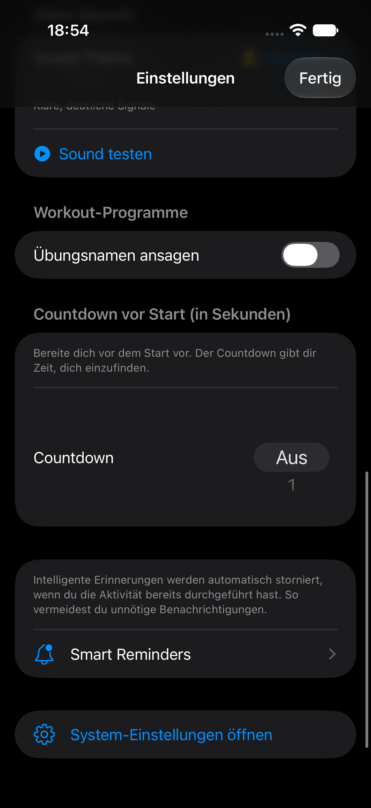

Claude-Verbindung in den Einstellungen
Ganz unten in den Einstellungen kommt eine Zeile „Claude-Verbindung“ dazu. Sie führt auf eine eigene Seite: anmelden, sehen, wann zuletzt abgeglichen wurde, was Claude geliefert hat und was Claude von der App sieht, und die Verbindung trennen. In der App-Store-Version ist nichts davon zu sehen.
Heute und Entwurf

🔔︎Smart Reminders›
Claude
✳︎Claude-VerbindungAngemeldet›
Claude kann dir Übungen und Programme in die App liefern.
⚙︎System-Einstellungen öffnen
Angemeldet mit AppleDieses iPhone
Letzter Abgleichheute, 08:14
Letzte Lieferungen
24.11., 21:02Übernommen
23.11., 19:40Abgelehnt
22.11., 07:55Übernommen
Abgelehnt: Die Lieferung war älter als der Stand der App.
Was Claude sieht
Deine Übungen (48, davon 3 von Claude), 6 Workout-Programme, 4 Atemübungen und die Ergebnisse der letzten Lieferungen. Nicht: Verlauf, Gesundheitsdaten, Tracker.
Abmelden
Verbindung trennen …
Angemeldet mit AppleDieses iPhone
Letzter Abgleichheute, 08:14
Letzte Lieferungen
24.11., 21:02Übernommen
23.11., 19:40Abgelehnt
22.11., 07:55Übernommen
Abgelehnt: Die Lieferung war älter als der Stand der App.
Was Claude sieht
Deine Übungen (48, davon 3 von Claude), 6 Workout-Programme, 4 Atemübungen und die Ergebnisse der letzten Lieferungen. Nicht: Verlauf, Gesundheitsdaten, Tracker.
Abmelden
Verbindung trennen …
Die anderen Zustände
Melde dich mit Apple an, dann kann Claude dir Übungen und Programme liefern. Ohne Anmeldung verlässt nichts dieses iPhone.
Mit Apple anmelden
Letzte Lieferungen
Noch keine Lieferung
Angemeldet mit AppleDieses iPhone
Letzter Abgleichheute, 08:14
Verbindung trennen?
Claude sieht danach nichts mehr von dieser App. Was Claude schon geliefert hat, bleibt auf dem iPhone.
Verbindung trennen
Abbrechen
Claude
Angemeldet mit AppleDieses iPhone
Letzter Abgleichheute, 08:14
Abmelden
Verbindung trennen …
Claude sieht deine Übungen, Programme und Atemübungen, keinen Verlauf und keine Gesundheitsdaten.
⚙︎System-Einstellungen öffnen
Zahlen und Zeiten sind Beispiele. Farben, Schrift und Abstände folgen der App (iOS-Systemfarben, gruppierte Liste). Empfehlung: eigene Seite, weil die Lieferliste und „Was Claude sieht“ sonst die Einstellungen sprengen.